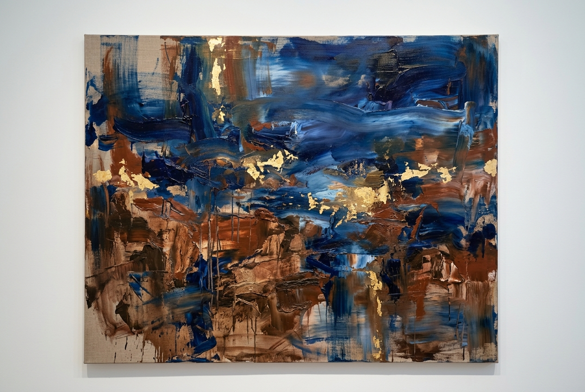
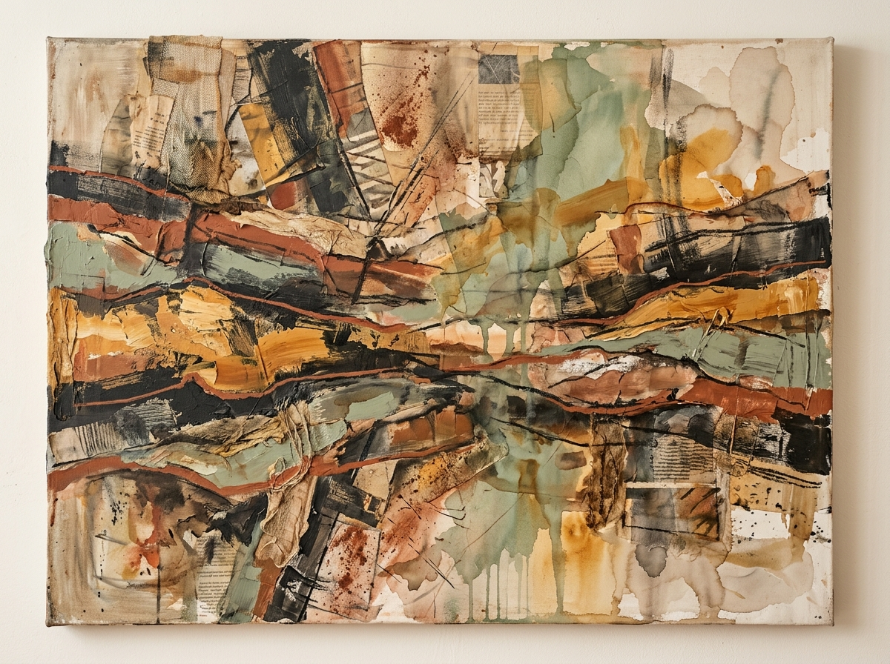
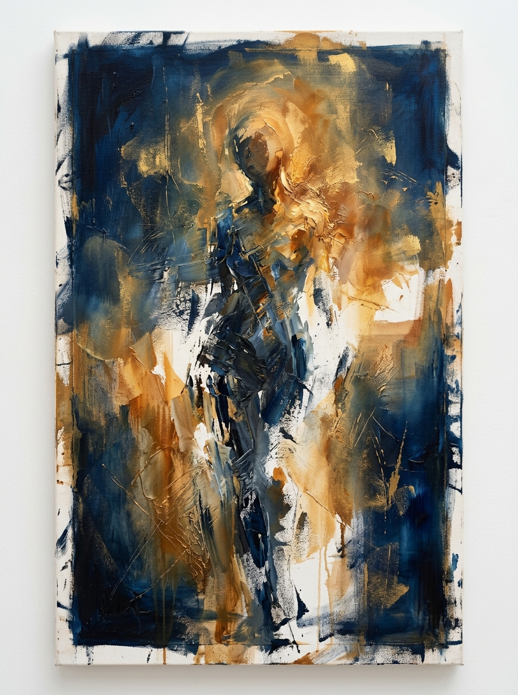
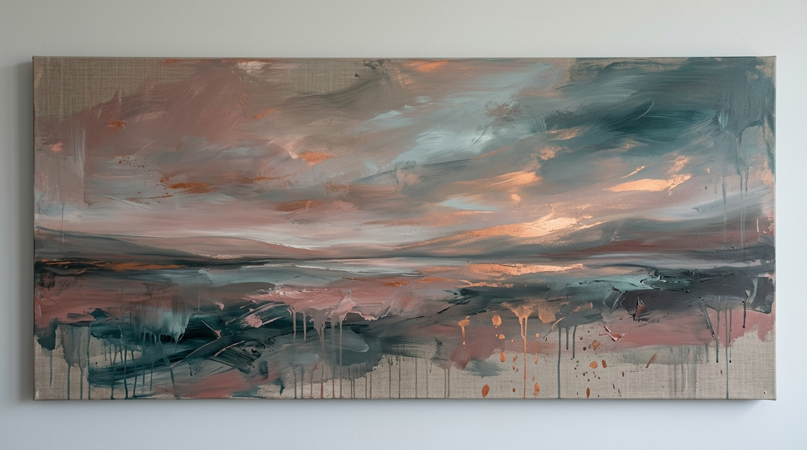
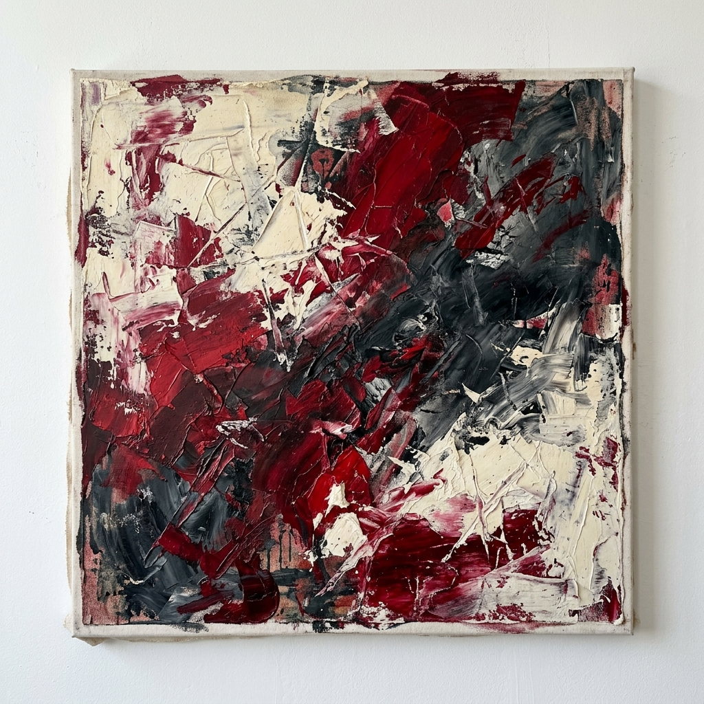
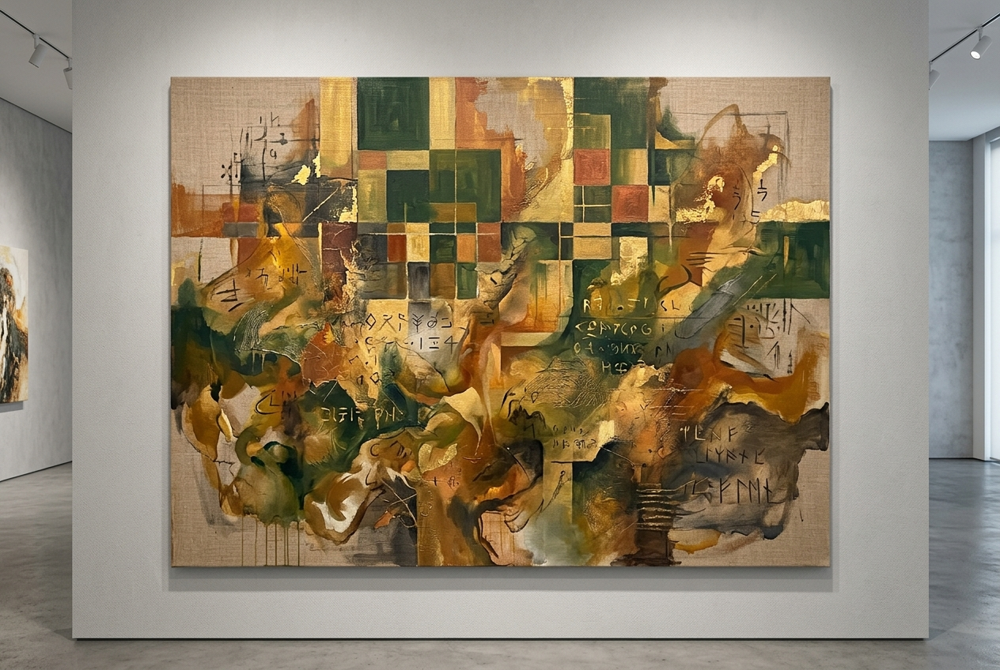

Conscious Omnium
A curated selection of paintings and mixed media works from 2024–2026. Each piece is an inquiry into the textures of consciousness and the residues of lived experience.

2026 · Liminal Landscapes

2026 · Embodied Cartography

2026 · Liminal Landscapes

2025 · Liminal Landscapes

2025 · The Space Between

2024 · Embodied Cartography